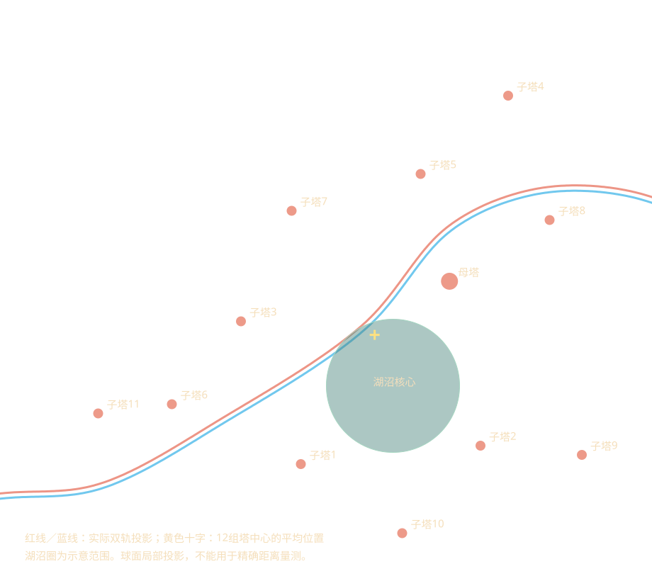

湖沼不在建筑范围最外沿，但核心偏向一侧。轨道高差、近塔与树冠遮挡，让它缺乏高潮场景的完整展示。红蓝车反向经过同一区域，换车无法根治。

这是轨道位置的验证相机，非车厢座椅实测。轨道半径约169.5，湖面半径136.7，径向高差32.8；图中桥面和冠层遮挡明显。
保留母塔、环湖子塔、湖沼的内部关系，将其作为一个整体规划到城市视觉中心。外围塔围绕核心组织，不强求轨道左右各6组；同时需要一段能完整看见母塔、湖面、巨树的观景线路。仅移动核心或换乘红车都不足以解决遮挡。